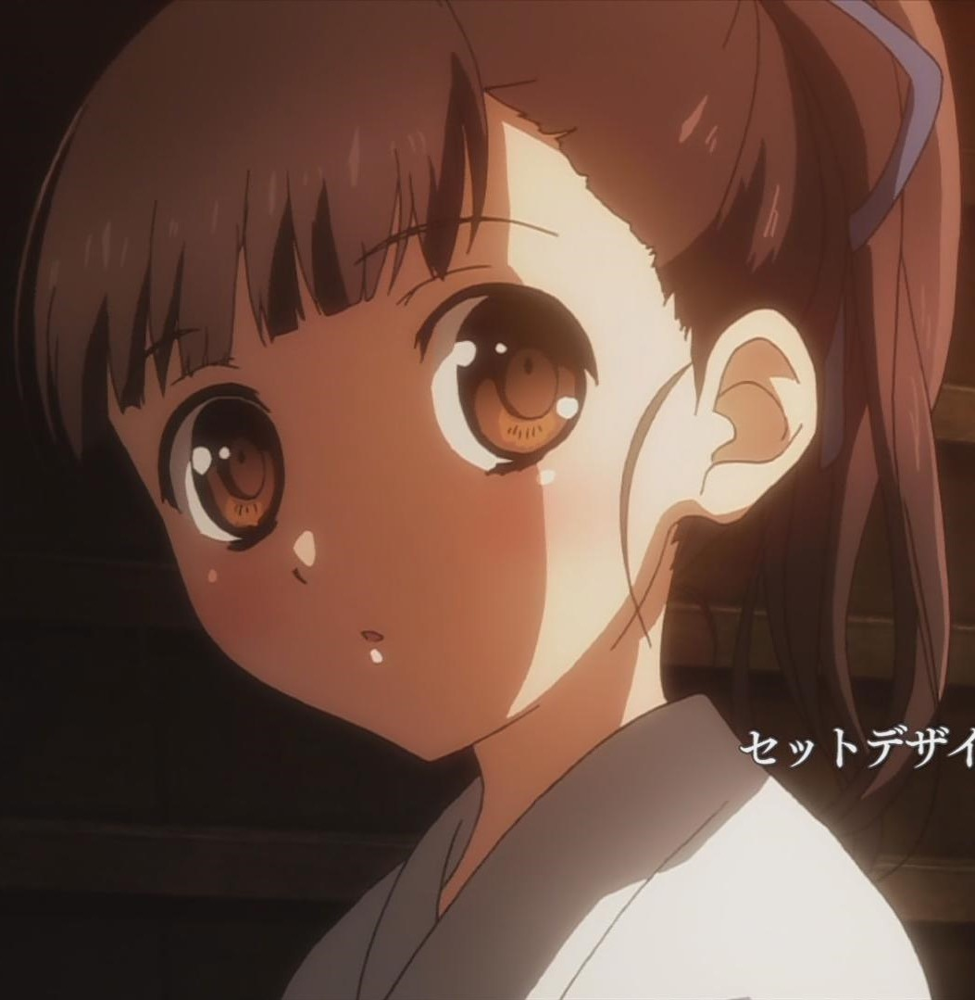
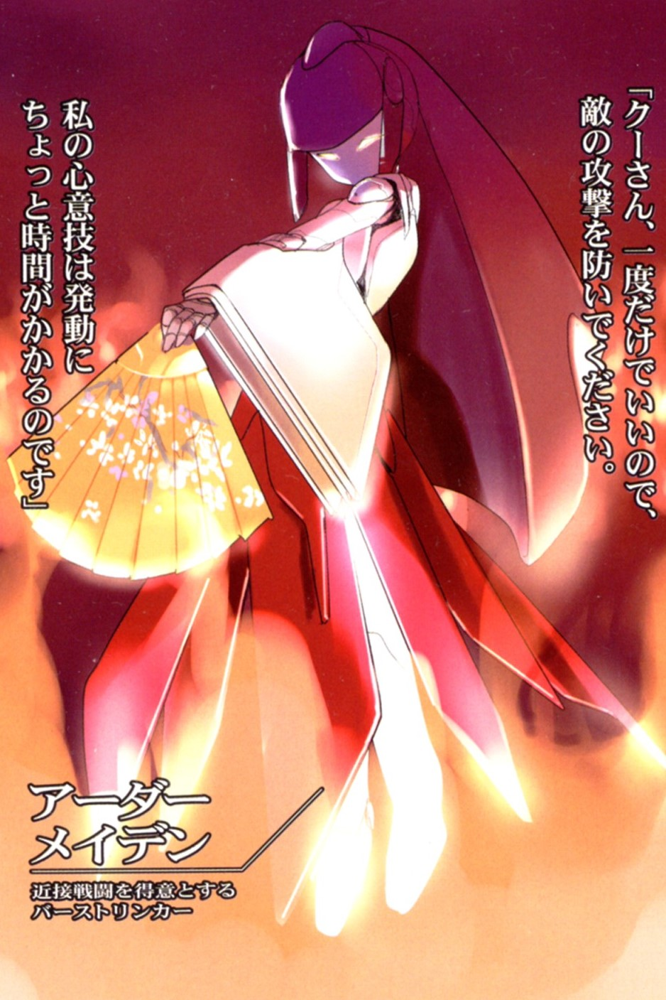

Реальное имя - Синомия Утай
(四埜宮 謡 , Shinomiya Uta)
Игровое имя - Огненная жрица
(Ardor Meiden)
Cтатус: Ускоренная
Дата рождения: ...
Синомия Утай - одна из персонажей Accel World. Ускоренная, входит в состав Чёрного Легиона (Nega Nebula).
Личность
Для своего возраста крайне собранная, ответственная и целеустремленная. Происходит из династии артистов традиционного японского театра зеркал "Но". Из-за психической травмы в связи со смертью на ее глазах своего старшего брата потеряла способность говорить даже с помощью нейролинкера. В связи с этим вместо него ей установлен внутричерепной чип-имплантат, с окружающими вынуждена общаться с помощью текстового чата с виртуальной клавиатурой.
Внешность
Реальная
Маленькая даже для школьницы четвёртого класса. Черты лица исконно японские, будто вырезанные на поверхности дерева мастером-резчиком: аккуратно подстриженная чуть ниже бровей чёлка чёрных волос, а сзади её волосы аккуратно собраны у макушки
Сетевой аватар
Сетевой аватар Синомии выглядит как девочка с мышиными ушками и хвостиком, одетая в белое платьице.
Дуэльный аватар
Очень редкий двухцветный красно-белый дуэльный аватар. По внешнему виду напоминает жрицу традиционной японской религии синтоизма - мико. В форме аватара может без проблем разговаривать. Имеет усиливающее снаряжение в виде лука, он называется «Зовущий Пламя». Призывается фразой - «Да не собьются с пути стрелы мои».

Биография
До событий 6 тома скрывалась от ускоренного мира, изредка участвуя в дуэлях, не заходя на неограниченное поле ускоренного мира. Не делала она это потому, что была «заперта» в бесконечном истреблении возле южных врат Сюдзаку, Императорского дворца. Оказалась она там во время отчаянной попыткой штурма дворца Чёрным легионом, в котором и состояла, после убийства Первого Красного короля. Но ей пришлось выйти на контакт с её подругой и предводителем бывшего Чёрного легиона, Черноснежкой.
Способности
- Flame Torrents -из направленного вверх под углом лука выстреливается огненная стрела. Дойдя до верхней точки траектории, она разбивается на несколько десятков других стрел. Ардор Мэйден умеет контролировать размер площади поражения стрел.
- Flame Vortex - Стрела превращается в подобие огненного торнадо. Её мощь настолько велика, что она могла пролететь несколько десятков метров даже на уровне Океан, испаряя воду вокруг себя. Единственный недостаток техники в том, что огонь, не обладая твёрдостью, с трудом пробивает каменные и металлические стены, но сквозь даже небольшую щель проникнуть мог очень глубоко
- Superluminal Stroke — единственный спецприем в арсенале Ardor Maiden без огненного атрибута. Стрела отличается повышенной дальностью выстрела, скоростью и пробивной силой, но пониженной точностью. Отличается огромным уроном (световой атрибут)– при попадании в уязвимое место аватара снимает около 70% хитпоинтов даже у прочного металлического аватара 7-го уровня.
 Галерея
Галерея